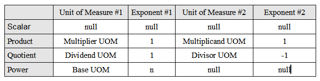

Library
A unit of measure is represented internally as a product of two other power units of measure as shown in the table below. Each row is a unit of measure category.

For a simple scalar UOM (e.g. kilogram), both of the UOMs are null with the exponents defaulted to 0. For a product UOM (e.g. Newton), the first UOM is the multiplier and the second is the multiplicand with both exponents set to 1. For a quotient UOM (e.g. kilograms/hour), the first UOM is the dividend and the second is the divisor. The dividend has an exponent of 1 and the divisor an exponent of -1. For a power UOM (e.g. square metres), the first UOM is the base and the exponent is the power. In this case, the second UOM is null with the exponent defaulted to 0.
From the two power products, a unit of measure can then be recursively reduced to a map of base units of measure and corresponding exponents along with a scaling factor. For example, a Newton reduces to (kg, 1), (m, 1), (s, -2) in the SI system. Multiplying, dividing and converting a unit of measure is accomplished by merging the two maps (i.e. “cancelling out” units) and then computing the overall scaling factor. The base symbol is obtained directly from the final map.
Code
The singleton unified MeasurementSystem is obtained by calling:
MeasurementSystem sys = MeasurementSystem.getSystem();
The Unit.properties file defines the name, symbol, description and UCUM symbol for each of the predefined units in the following code examples. The Unit.properties file is localizable. For example, ‘metres’ can be changed to use the US spelling ‘meters’ or descriptions can be translated to another language.
The metre scalar UOM is created by the MeasurementSystem as follows:
UnitOfMeasure uom = createScalarUOM(UnitType.LENGTH, Unit.METRE, symbols.getString("m.name"),
symbols.getString("m.symbol"), symbols.getString("m.desc"));
The square metre power UOM is created by the MeasurementSystem as follows:
UnitOfMeasure uom = createPowerUOM(UnitType.AREA, Unit.SQUARE_METRE, symbols.getString("m2.name"),
symbols.getString("m2.symbol"), symbols.getString("m2.desc"), getUOM(Unit.METRE), 2);
The metre per second quotient UOM is created by the MeasurementSystem as follows:
UnitOfMeasure uom = createQuotientUOM(UnitType.VELOCITY, Unit.METRE_PER_SEC,
symbols.getString("mps.name"), symbols.getString("mps.symbol"), symbols.getString("mps.desc"),
getUOM(Unit.METRE), getSecond());
The Newton product UOM is created by the MeasurementSystem as follows:
UnitOfMeasure uom = createProductUOM(UnitType.FORCE, Unit.NEWTON, symbols.getString("newton.name"),
symbols.getString("newton.symbol"), symbols.getString("newton.desc"),
getUOM(Unit.KILOGRAM), getUOM(Unit.METRE_PER_SECOND_SQUARED));
A millisecond is 1/1000th of a second with a defined prefix and created as:
UnitOfMeasure second = sys.getSecond();
UnitOfMeasure msec = sys.getUOM(Prefix.MILLI, second);
For a second example, a US gallon = 231 cubic inches:
UnitOfMeasure uom = createScalarUOM(UnitType.VOLUME, Unit.US_GALLON, symbols.getString("us_gallon.name"),
symbols.getString("us_gallon.symbol"), symbols.getString("us_gallon.desc"));
uom.setConversion(231d, getUOM(Unit.CUBIC_INCH));
When creating the foot unit of measure in the unified measurement system, a bridge conversion to metre is defined (1 foot = 0.3048m):
UnitOfMeasure uom = createScalarUOM(UnitType.LENGTH, Unit.FOOT, symbols.getString("foot.name"),
symbols.getString("foot.symbol"), symbols.getString("foot.desc"));
// bridge to SI
uom.setBridgeConversion(0.3048, getUOM(Unit.METRE), 0);
Custom units and conversions can also be created:
// gallons per hour
UnitOfMeasure gph = sys.createQuotientUOM(UnitType.VOLUMETRIC_FLOW, "gph", "gal/hr", "gallons per hour",
sys.getUOM(Unit.US_GALLON), sys.getHour());
// 1 16 oz can = 16 fl. oz.
UnitOfMeasure one16ozCan = sys.createScalarUOM(UnitType.VOLUME, "16 oz can", "16ozCan", "16 oz can");
one16ozCan.setConversion(16d, sys.getUOM(Unit.US_FLUID_OUNCE));
// 400 cans = 50 US gallons
Quantity q400 = new Quantity(400d, one16ozCan);
Quantity q50 = q400.convert(sys.getUOM(Unit.US_GALLON));
// 1 12 oz can = 12 fl.oz.
UnitOfMeasure one12ozCan = sys.createScalarUOM(UnitType.VOLUME, "12 oz can", "12ozCan", "12 oz can");
one12ozCan.setConversion(12d, sys.getUOM(Unit.US_FLUID_OUNCE));
// 48 12 oz cans = 36 16 oz cans
Quantity q48 = new Quantity(48d, one12ozCan);
Quantity q36 = q48.convert(one16ozCan);
// 6 12 oz cans = 1 6-pack of 12 oz cans
UnitOfMeasure sixPackCan = sys.createScalarUOM(UnitType.VOLUME, "6-pack", "6PCan", "6-pack of 12 oz cans");
sixPackCan.setConversion(6d, one12ozCan);
// 1 case = 4 6-packs
UnitOfMeasure fourPackCase = sys.createScalarUOM(UnitType.VOLUME, "6-pack case", "4PCase", "four 6-packs");
fourPackCase.setConversion(4d, sixPackCan);
// A beer bottling line is rated at 2000 12 ounce cans/hour (US) at the
// filler. The case packer packs four 6-packs of cans into a case.
// Assuming no losses, what should be the rating of the case packer in
// cases per hour? And, what is the draw-down rate on the holding tank
// in gallons/minute?
UnitOfMeasure canph = sys.createQuotientUOM(one12ozCan, sys.getHour());
UnitOfMeasure caseph = sys.createQuotientUOM(fourPackCase, sys.getHour());
UnitOfMeasure gpm = sys.createQuotientUOM(sys.getUOM(Unit.US_GALLON), sys.getMinute());
// filler production rate
Quantity filler = new Quantity(2000d, canph);
// tank draw-down
Quantity draw = filler.convert(gpm);
// case packer production
Quantity packer = filler.convert(caseph);
Quantities can be added, subtracted and converted:
UnitOfMeasure m = sys.getUOM(Unit.METRE);
UnitOfMeasure cm = sys.getUOM(Prefix.CENTI, m);
Quantity q1 = new Quantity(2d, m);
Quantity q2 = new Quantity(2d, cm);
// add two quantities. q3 is 2.02 metre
Quantity q3 = q1.add(q2);
// q4 is 202 cm
Quantity q4 = q3.convert(cm);
// subtract q1 from q3 to get 0.02 metre
q3 = q3.subtract(q1);
as well as multiplied and divided:
Quantity q1 = new Quantity(50d, cm);
Quantity q2 = new Quantity(50d, cm);
// q3 = 2500 cm^2
Quantity q3 = q1.multiply(q2);
// q4 = 50 cm
Quantity q4 = q3.divide(q1);
and inverted:
UnitOfMeasure mps = sys.getUOM(Unit.METRE_PER_SECOND);
Quantity q1 = new Quantity(10d, mps);
// q2 = 0.1 sec/m
Quantity q2 = q1.invert();
To make working with linearly scaled units of measure (with no offset) easier, the MeasurementSystem’s getUOM() using a Prefix can be used. This method accepts a Prefix enum and the unit of measure that it is scaled against. The resulting unit of measure has a name concatented with the Prefix’s name and target unit name. The symbol is formed similarly. For example, a centilitre (cL) is created from the pre-defined litre by:
UnitOfMeasure litre = sys.getUOM(Unit.LITRE);
UnitOfMeasure cL = sys.getUOM(Prefix.CENTI, litre);
and, a megabyte (MB = 2^20 bytes) is created by:
UnitOfMeasure mB = sys.getUOM(Prefix.MEBI, Unit.BYTE);
Implicit Conversions
A quantity can be converted to another unit of measure without requiring the target UOM to first be created. If the quantity has a product or quotient UOM, use the convertToPowerProduct() method. For example:
// convert 1 newton-metre to pound force-inches
Quantity nmQ = new Quantity(1.0, sys.getUOM(Unit.NEWTON_METRE));
Quantity lbfinQ = nmQ.convertToPowerProduct(sys.getUOM(Unit.POUND_FORCE), sys.getUOM(Unit.INCH));
If the quantity has power UOM, use the convertToPower() method. For example:
// convert 1 square metre to square inches
Quantity m2Q = new Quantity(1.0, sys.getUOM(Unit.SQUARE_METRE));
Quantity in2Q = m2Q.convertToPower(sys.getUOM(Unit.INCH));
Other UOMs can be converted using the convert() method.
Classification
During arithmetic operations, the final type of the unit may not be known. In this case, invoking the classify() method will attempt to find a matching unit type. For example, the calculated unit of measure below has a type of UnitType.ELECTRIC_CAPACITANCE:
UnitOfMeasure s = sys.getSecond();
UnitOfMeasure m = sys.getUOM(Unit.METRE);
UnitOfMeasure kg = sys.getUOM(Unit.KILOGRAM);
UnitOfMeasure amp = sys.getUOM(Unit.AMPERE);
UnitOfMeasure cap = s.power(-3).multiply(amp.power(-2)).multiply(m.power(2)).divide(kg).classify();
A quantity resulting from an arithmetic operation can also be classified. For example, the “density” quantity has UnitType.DENSITY:
Quantity mass = new Quantity(1035, Unit.KILOGRAM);
Quantity volume = new Quantity(1000, Unit.LITRE);
Quantity density = mass.divide(volume).classify();
Physical Unit Examples
Water boils at 100 degrees Celcius. What is this temperature in Fahrenheit?
Quantity qC = new Quantity(100.0, Unit.CELSIUS);
Quantity qF = qC.convert(Unit.FAHRENHEIT);
A nutrition label states the energy content is 1718 KJ. What is this amount in kilo-calories?
Quantity kcal = new Quantity(1718, Prefix.KILO, Unit.JOULE).convert(Prefix.KILO, Unit.CALORIE);
One’s Body Mass Index (BMI) can be calculated as:
Quantity height = new Quantity(2d, Unit.METRE);
Quantity mass = new Quantity(100d, Unit.KILOGRAM);
Quantity bmi = mass.divide(height.multiply(height));
Einstein’s famous E = mc^2:
Quantity c = sys.getQuantity(Constant.LIGHT_VELOCITY);
Quantity m = new Quantity(1.0, Unit.KILOGRAM);
Quantity e = m.multiply(c).multiply(c);
// A Tesla Model S battery has a capacity of 100 KwH.
// When fully charged, how many electrons are in the battery?
Quantity c = sys.getQuantity(Constant.LIGHT_VELOCITY);
Quantity me = sys.getQuantity(Constant.ELECTRON_MASS);
Quantity kwh = new Quantity(100, Prefix.KILO, Unit.WATT_HOUR);
Quantity electrons = kwh.divide(c).divide(c).divide(me);
Ideal Gas Law, PV = nRT. A cylinder of argon gas contains 50.0 L of Ar at 18.4 atm and 127 -C. How many moles of argon are in the cylinder?
Quantity p = new Quantity(18.4, Unit.ATMOSPHERE).convert(Unit.PASCAL);
Quantity v = new Quantity(50d, Unit.LITRE).convert(Unit.CUBIC_METRE);
Quantity t = new Quantity(127d, Unit.CELSIUS).convert(Unit.KELVIN);
Quantity n = p.multiply(v).divide(sys.getQuantity(Constant.GAS_CONSTANT).multiply(t));
Photon energy using Planck’s constant:
// energy of red light photon = Planck's constant times the frequency
Quantity frequency = new Quantity(400d, sys.getUOM(Prefix.TERA, Unit.HERTZ));
Quantity ev = sys.getQuantity(Constant.PLANCK_CONSTANT).multiply(frequency).convert(Unit.ELECTRON_VOLT);
// and wavelength of red light in nanometres (approx 749.48)
Quantity wavelength = sys.getQuantity(Constant.LIGHT_VELOCITY).divide(frequency).convert(sys.getUOM(Prefix.NANO, Unit.METRE));
Newton’s second law of motion (F = ma). Weight of 1 kg in lbf:
Quantity mkg = new Quantity(1d, Unit.KILOGRAM);
Quantity f = mkg.multiply(sys.getQuantity(Constant.GRAVITY)).convert(Unit.POUND_FORCE);
Units per volume of solution, C = A x (m/V)
// create the "A" unit of measure
UnitOfMeasure activityUnit = sys.createQuotientUOM(UnitType.UNCLASSIFIED, "activity", "act",
"activity of material", sys.getUOM(Unit.UNIT), sys.getUOM(Prefix.MILLI, Unit.GRAM));
// calculate concentration
Quantity activity = new Quantity(1d, activityUnit);
Quantity grams = new Quantity(1d, Unit.GRAM).convert(Prefix.MILLI, Unit.GRAM);
Quantity volume = new Quantity(1d, sys.getUOM(Prefix.MILLI, Unit.LITRE));
Quantity concentration = activity.multiply(grams.divide(volume));
Quantity katals = concentration.multiply(new Quantity(1d, Unit.LITRE)).convert(Unit.KATAL);
Black body radiation:
// The Stefan-Boltzmann law states that the power emitted per unit area
// of the surface of a black body is directly proportional to the fourth
// power of its absolute temperature: sigma * T^4
// calculate at 1000 Kelvin
Quantity temp = new Quantity(1000.0, Unit.KELVIN);
Quantity intensity = sys.getQuantity(Constant.STEFAN_BOLTZMANN).multiply(temp.power(4));
Expansion of the universe:
// Hubble's law, v = H0 x D. Let D = 10 Mpc
Quantity d = new Quantity(10d, sys.getUOM(Prefix.MEGA, sys.getUOM(Unit.PARSEC)));
Quantity h0 = sys.getQuantity(Constant.HUBBLE_CONSTANT);
Quantity velocity = h0.multiply(d);
Device Characteristic Life
// A device has an activation energy of 0.5 and a characteristic life of
// 2,750 hours at an accelerated temperature of 150 degrees Celsius.
// Calculate the characteristic life at an expected use temperature of
// 85 degrees Celsius.
// Convert the Boltzman constant from J/K to eV/K for the Arrhenius equation
Quantity j = new Quantity(1d, Unit.JOULE);
Quantity eV = j.convert(Unit.ELECTRON_VOLT);
// Boltzmann constant
Quantity Kb = sys.getQuantity(Constant.BOLTZMANN_CONSTANT).multiply(eV.getAmount());
// accelerated temperature
Quantity Ta = new Quantity(150d, Unit.CELSIUS);
// expected use temperature
Quantity Tu = new Quantity(85d, Unit.CELSIUS);
// calculate the acceleration factor
Quantity factor1 = Tu.convert(Unit.KELVIN).invert().subtract(Ta.convert(Unit.KELVIN).invert());
Quantity factor2 = Kb.invert().multiply(0.5);
Quantity factor3 = factor1.multiply(factor2);
double AF = Math.exp(factor3.getAmount());
// calculate longer life at expected use temperature
Quantity life85 = new Quantity(2750d, Unit.HOUR);
Quantity life150 = life85.multiply(AF);
Financial Examples
Value of a stock portfolio:
// John has 100 shares of Alphabet Class A stock. How much is his
// portfolio worth in euros when the last trade was $838.96 and a US
// dollar is worth 0.94 euros?
UnitOfMeasure euro = sys.getUOM(Unit.EURO);
UnitOfMeasure usd = sys.getUOM(Unit.US_DOLLAR);
usd.setConversion(0.94, euro);
UnitOfMeasure googl = sys.createScalarUOM(UnitType.CURRENCY, "Alphabet A", "GOOGL",
"Alphabet (formerly Google) Class A shares");
googl.setConversion(838.96, usd);
Quantity portfolio = new Quantity(100, googl);
Quantity value = portfolio.convert(euro);
Medical Examples
// convert Unit to nanokatal
UnitOfMeasure u = sys.getUOM(Unit.UNIT);
UnitOfMeasure katal = sys.getUOM(Unit.KATAL);
Quantity q1 = new Quantity(1.0, u);
Quantity q2 = q1.convert(sys.getUOM(Prefix.NANO, katal));
// test result Equivalent
UnitOfMeasure eq = sys.getUOM(Unit.EQUIVALENT);
UnitOfMeasure litre = sys.getUOM(Unit.LITRE);
UnitOfMeasure mEqPerL = sys.createQuotientUOM(UnitType.MOLAR_CONCENTRATION, "milliNormal", "mEq/L",
"solute per litre of solvent ", sys.getUOM(Prefix.MILLI, eq), litre);
Quantity testResult = new Quantity(5.0, mEqPerL);
// blood cell count test results
UnitOfMeasure k = sys.getUOM(Prefix.KILO, sys.getOne());
UnitOfMeasure uL = sys.getUOM(Prefix.MICRO, Unit.LITRE);
UnitOfMeasure kul = sys.createQuotientUOM(UnitType.MOLAR_CONCENTRATION, "K/uL", "K/uL",
"thousands per microlitre", k, uL);
testResult = new Quantity(7.0, kul);
UnitOfMeasure fL = sys.getUOM(Prefix.FEMTO, Unit.LITRE);
testResult = new Quantity(90d, fL);
// TSH test result
UnitOfMeasure uIU = sys.getUOM(Prefix.MICRO, Unit.INTERNATIONAL_UNIT);
UnitOfMeasure mL = sys.getUOM(Prefix.MILLI, Unit.LITRE);
UnitOfMeasure uiuPerml = sys.createQuotientUOM(UnitType.MOLAR_CONCENTRATION, "uIU/mL", "uIU/mL",
"micro IU per millilitre", uIU, mL);
testResult = new Quantity(2.0, uiuPerml);
Multi-unit Conversions
// convert 74 inches to feet and inches
Quantity qHeight = new Quantity(74, Unit.INCH);
List<UnitOfMeasure> uoms = new ArrayList<>();
uoms.add(sys.getUOM(Unit.FOOT));
uoms.add(sys.getUOM(Unit.INCH));
List<Quantity> converted = qHeight.convert(uoms);
Converting Mixed Units of Measure
In general, Caliper does not support conversion of mixed units of measure. For example, if customary and SI units appear together in either a quotient or product unit of measurement (e.g. density in kilogram/cubic foot), conversion to another consistent unit of measure (e.g. density in lbm/litre) requires a case-by-case solution. The practical case below from the mining and precious metals industry illustrates this approach.
Caliper defines a troy ounce (troyOz) as 0.06857142857 pound-mass. Now define the pennyweight based on a troy ounce where sys = MeasurementSystem.instance():
UnitOfMeasure pennyweight = sys.createScalarUOM(UnitType.MASS, "pennyweight", "dwt", "Pennyweight");
pennyweight.setConversion(0.05, troyOz);
Now create a unitless quotient UOM for metal grade:
UnitOfMeasure pennyweightPerShortTon = sys.createQuotientUOM(pennyweight, sys.getUOM(Unit.US_TON));
Let’s convert a precious metal grade defined in SI units to pennyweight customary units:
UnitOfMeasure gramsPerTonne = sys.createQuotientUOM(sys.getUOM(Unit.GRAM), sys.getUOM(Unit.TONNE));
Quantity qGrade = new Quantity(0.95, gramsPerTonne);
Quantity qGradeConverted = qGrade.convert(pennyweightPerShortTon);
The converted grade is about 0.554167. These conversions work since the quotient units are defined within a consistent system (SI and Customary in this example).
Now suppose we want to convert a mixed unit grade in grams per metric tonne to troy ounces per metric tonne. This will require defining another troy ounce based on grams:
UnitOfMeasure troyOzSI = sys.createScalarUOM(UnitType.MASS, "troy ounce SI", "troy oz", "Troy ounce SI conversion");
troyOzSI.setConversion(31.1034768, sys.getUOM(Unit.GRAM));
UnitOfMeasure troyOzPerTonne = sys.createQuotientUOM(troyOzSI, sys.getUOM(Unit.TONNE));
Quantity qGradeConverted = qGrade.convert(troyOzPerTonne);
The grade when converted to troyOzPerTonne is about 0.0305432.
Caching
A unit of measure once created is registered in two hashmaps, one by its base symbol key and the second one by its enumeration key. Caching greatly increases performance since the unit of measure is created only once. Methods are provided to clear the cache of all instances as well as to unregister a particular instance.
The double value of a unit of measure conversion is also cached. This performance optimization eliminates the need to calculate the conversion multiple times if many quantities are being converted at once; for example, operations upon a vector or matrix of quantities all with the same unit of measure.
Localization
All externally visible text is defined in two resource bundle .properties files. The Unit.properties file has the name (.name), symbol (.symbol) and description (.desc) for a unit of measure as well as toString() method text. The Message.properties file has the text for an exception. A default English file for each is included in the project. The files can be translated to another language by following the Java locale naming conventions for the properties file, or the English version can be edited, e.g. to change “metre” to “meter”. For example, a metre’s text is:
# metre
m.name = metre
m.symbol = m
m.desc = The length of the path travelled by light in vacuum during a time interval of 1/299792458 of a second.
and for an exception:
already.created = The unit of measure with symbol {0} has already been created by {1}. Did you intend to scale this unit with a linear conversion?